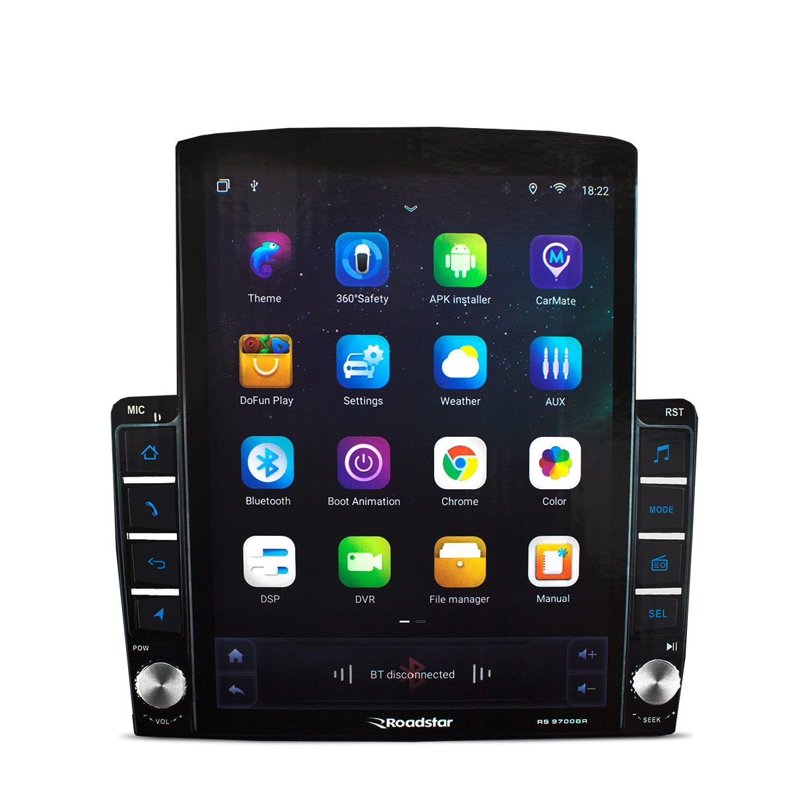

O trabalho analisa a criação e evolução da Open Automotive Alliance (OAA), destacando seu papel na integração do Android ao setor automotivo. Aborda a transição do Android Auto para o Android Automotive OS e o surgimento dos Veículos Definidos por Software (SDV). O estudo justifica sua relevância pela mudança de sistemas fechados para ecossistemas conectados e competitivos, com a presença de grandes players globais. O objetivo é entender a transformação da OAA, sua atual inatividade e comparar as soluções Android com concorrentes, considerando também a estratégia recente de abertura de código.
A Open Automotive Alliance é uma união entre grandes empresas dos setores automotivos e tecnológicos, foi criada em Las Vegas, no ano de 2014, em um evento da CES (uma das maiores feiras de tecnologia do mundo), com o intuito de acelerar as inovações no setor automotivo e tornar a tecnologia nos carros mais segura, integrada e intuitiva para todos, utilizando uma plataforma comum para isso, o Android.

Essas são as empresas principais e criadoras do Open Automitive Alliance, com o passar dos anos, outras empresas importantes também entraram na aliança. Por exemplo: Ford, Mitsubishi, Volkswagen, entre outros.
Já havia algumas marcas com o foco de criar sistemas operacionais e os padronizar nos carros, alguns exemplos são a Microsoft Windows Embedded Automotive, foi a líder absoluta por muitos anos e fornecia uma base para as produtoras fazerem suas próprias interfaces; a QNX (BlackBerry), um sistema operacional estável e seguro e era apenas um “esqueleto” da interface da própria marca; e a GENIVI Alliance, uma aliança focada em uma padronização dos sistemas operacionais com a Linux. Mesmo com fortes estruturas, essas empresas ainda tinham muitas falhas, por exemplo: sistemas de entretenimento eram bem lentos, difíceis de usar e com grandes períodos entre as atualizações.
A Open Automotive Alliance é uma união entre grandes empresas dos setores automotivos e tecnológicos, foi criada em Las Vegas, no ano de 2014, em um evento da CES (uma das maiores feiras de tecnologia do mundo), com o intuito de acelerar as inovações no setor automotivo e tornar a tecnologia nos carros mais segura, integrada e intuitiva para todos, utilizando uma plataforma comum para isso, o Android.
O Android Automotive OS é um sistema próprio do carro, independente de celular, com conexão à internet. Ele integra-se ao hardware e ao Barramento CAN, permitindo que o motorista ajuste funções como ar-condicionado e sensores diretamente pelo sistema, coisas que o Android Auto não poderia fazer. Muitas empresas se adequaram ao Android Automotive OS, por exemplo:
Mesmo com sua grande história, a Open Automotive Alliance não tem muita atuação hoje em dia, ela não faliu ou deixou de existir, porém ela se tornou uma “Aliança inativa”. O seu declínio se iniciou por volta de 2018 e 2019, isso se deu por conta do seu próprio avanço. Os motivos do ocorrido:
Em 2014, era necessário provar a todos que o Android Auto era seguro e estável aos carros, após a padronização do Android Auto nos carros, o Google não precisava mais da aliança para fazer algo, então eles começaram a fazer acordos individuais e comerciais com as montadoras.
Como o AAOS é um sistema nativo do carro, ele exige uma interação mais profunda e secreta do software com o hardware de cada marca, logo a padronização do Android não dá mais certo, porque não há como ter um algo padrão para todos com exceções.
A partir de 2019, algumas montadoras saíram da Aliança, recuando a ideia de ter uma “aliança total” com o Google, por receio da exposição dos documentos do motorista
A decadência final da OAA como uma marca ocorreu recentemente. Com a chegada da arquitetura de Veículos Definidos por Software, o mercado precisava de parcerias mais técnicas. Com a Open Automotive Alliance, o foco eram as telas e músicas por meio do Smartphone, porém, agora, o mercado foca em condução e processamento, por isso a OAA ficou pequena para certas empresas. Um exemplo disso é a Parceria Qualcomm + Renault.
No dia 25 de março de 2026, o Google anunciou que vai liberar o sistema do Android Automotive OS ao SDV. Como foi dito antes, com o progresso de outras empresas, a OAA já estava inoperante e para tentar acompanhar os concorrentes, o Google tomou a iniciativa de abrir partes do código do Android, permitindo que a empresa utilizasse o sistema e podendo alterá-lo da maneira que quiser, integrando-o do jeito que preferir. Isso tira o medo de muitas empresas, que queriam o controle dos dados de seus clientes, porém a Google não tinha esse controle, essa inovação tenta provar que o Android pode ser tão flexível quanto ao Linux.
A Open Automotive Alliance, mesmo sendo a pioneira na de um sistema operacional para carros, também teve sem concorrentes, que também fora a causa de sua queda e decadência. Os principais concorrentes são:
A CarPlay não é uma aliança como a OAA, porém ela é uma concorrente do sistema operacional padrão, o Android. Na criação original, o nome da empresa era IOS In The Car e o primeiro projeto de sistema foi lançado em março de 2014, o IOS 7.1, e visava padronizar a Apple como o sistema operacional. O objetivo e as ideias permaneceram, mas o nome mudou e se tornou CarPlay, em 2022, isso para simbolizar que era uma nova geração, bem melhor que a antiga, essa mudança de nome foi tão importante, que só com isso a Apple foi um problema para a Open Automotive Alliance. Atualmente, a Apple consolidou a CarPlay Ultra, que assume todas as telas do carro e é um modelo que atrai marcas de luxo que querem exclusividade, como a Porshe e a Aston Martin.
A Tesla não é um concorrente direto da OAA, mas, com a briga entre CarPlay e Open Automotive Alliance, ela foi a única empresa que não escolheu um lado, ao invés disso, fundou seu próprio sistema operacional, baseado em Linux, por conta disso, a integração entre o software e o hardware é bem mais prática e rápida. Um dos principais motivos da Tesla não querer se unir a OAA foi o valor dos dados, com a OAA, o Google poderia acessar e armazenar os dados dos clientes, porém a Tesla queria os dados somente para eles. A tesla é um concorrente direto do Android Automotive OS, mas a Tesla tem muitos mais benefícios, por exemplo no mundo do entretenimento, pois o cliente pode ver Youtube, Netflix, Jogos, entre outros.
A Automotive Grade Linux é um projeto colaborativo de código aberto da Linux Foundation, o grupo foi criado em 2012, porém o primeiro lançamento foi em julho de 2014. A iniciativa veio da Toyota, em conjunto com empresas como a Panasonic e a Intel, com o objetivo de criar um sistema operacional “neutro”, isso se deu porque a Toyota queria ter o controle dos dados de seu cliente e a Google não tinha esse controle. Atualmente, a AGL é liderada pela Toyota e a Mazda, ambos utilizam a plataforma para acelerar o desenvolvimento de Veículos Definidos por Software (SDV). Em março de 2026, a AGL consolidou o lançamento da SoDeV (Software Defined Vehicle), uma plataforma que separa o desenvolvimento de software do hardware, isso permite que as montadoras atualizem as funções críticas do carro de forma independente. O seu principal diferencial é a escalabilidade e a customização robusta, não tem um padrão das interfaces, isso fica a escolha da montadora.
A HarmonyOS teve seu projeto apresentado em agosto de 2019, a empresa não pensava em começar a fazer sistemas para carros, mas algumas sanções do EUA impediram a Huawei de utilizar os serviços do Google, por isso eles aceleraram o desenvolvimento da HarmonyOS. O software para condução inteligente, Qiankun, foi lançada em abril de 2024. A Huawei percebeu que não bastava somente o entretenimento, mas também tinha que oferecer inteligência, hoje é uma das empresas mais respeitadas no ramo de tecnologia e tem muitas parcerias de peso, como Dongfeng e o Grupo FAW, integrando o sistema completo da Huawei. Uma “ameaça” à OAA vem da Huawei, a HarmonySpace, ela oferece uma integração, considerada por muitos críticos, bem superior ao da Open Automotive Alliance, conectando perfeitamente celulares, inteligência artificial e muitos outros. Hoje em dia, a Huawei foca em na padronização do sistema, não apenas em marcas de luxo, mas também, em marcas mais acessíveis.
A OAA foi essencial para modernizar a indústria automotiva, viabilizando a transformação dos carros em dispositivos conectados. Sua “inatividade” representa uma evolução para modelos mais flexíveis de parceria. A mudança para o Android Automotive OS permitiu maior integração com os veículos, enquanto o foco atual do setor está nos SDVs, com destaque para dados e processamento. Apesar da forte concorrência, o legado da OAA foi estabelecer padrões que possibilitaram o avanço rumo a veículos inteligentes e autônomos, consolidando o software como elemento central.